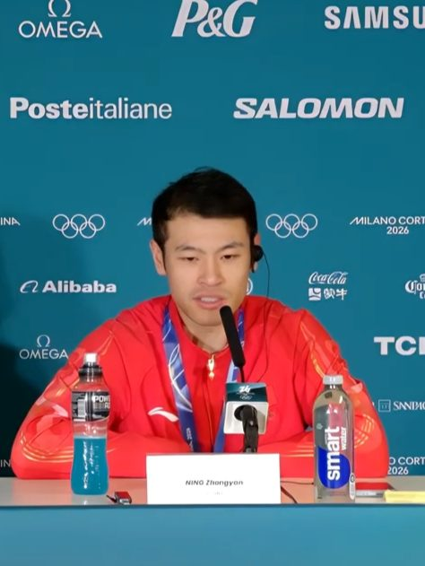

Стивен Томпсон завершил карьеру нокаутом с разворота на UFC 334
43-летний «Вандербой» закончил 16-летнюю карьеру в ММА, остановив Чарльза Радтке в третьем раунде в «Мэдисон-сквер-гарден». Дана Уайт сказал, что UFC проверит его в роли комментатора.

Игнатова (Трусова) взяла второе серебро Гран-при и приблизилась к финалу в Китае
Серебряный призёр Олимпиады-2022 стала второй на Skate America через неделю после второго места на Кубке Китая и идёт второй в общем зачёте, когда до конца серии остаются два этапа.

«Ляонин» впервые выиграл женскую Суперлигу Китая за тур до конца
Ничья 1:1 с «Пекином» дома в Шэньяне принесла титул — через год после того, как «Ляонин» упустил его в последнем туре в матче с тем же соперником.

Англия вдесятером обыграла Испанию 3:2 в Мадриде и заняла первое место в группе Лиги наций
Кейн, Конса и Уайт забили до удаления Эллиота Андерсона, и англичане удержали победу, прервав 43-матчевую беспроигрышную серию Испании.

В этот день в 2005 году: Австралия прервала 31-летнее ожидание и вышла на чемпионат мира
«Соккеруз» в драматичной серии пенальти одолели сборную Уругвая на « Stadium Australia» и завоевали путевку на ЧМ-2006.
Главное

Китай выиграл четыре золота на этапе Кубка мира по конькобежному спорту в Пекине
Нин Чжунъянь победил на 1000 м с рекордом катка и на 1500 м, а Лянь Цзывэнь и Гао Тинъюй выиграли по одному забегу на 500 м на «Ледяной ленте».

Эх Пхутонг: боец из Кохконга, ставший лицом кун-кхмера
Чемпион страны в нескольких весовых категориях, он побеждал иностранных соперников в Пномпене, бесплатно учил уличных детей и теперь тренирует новых чемпионов Камбоджи.

Ма Лун: от вундеркинда из Аньшаня до шести олимпийских золотых медалей
Его не включили в одиночный разряд сборной Китая на Играх-2012 в Лондоне, а затем он дважды подряд выиграл олимпийский одиночный турнир и три чемпионата мира подряд.

Япония обыграла Бразилию 3:2 в Сингапуре, забив победный гол в добавленное время
Тацухиро Сакамото забил на 91-й минуте после того, как дубль Винисиуса Жуниора позволил Бразилии сравнять счёт; Карло Анчелотти и Рафинья были удалены.

UFC 334: Ган нанёс Хокиту первое поражение, Харрисон заставила сдаться Нуньес
Оба чемпиона сохранили титулы в «Мэдисон Сквер Гарден»: Сирил Ган — с тремя судейскими записками 48:47, Кайла Харрисон — удушающим приёмом сзади в четвёртом раунде.

Вьетнам U23 сыграл вничью с Катаром и без поражений выиграл Gia Lai VTV Cup
Нгуен Минь Там сравнял счёт сразу после перерыва в Плейку и принёс хозяевам очко, которого хватило для титула.
ФутболЕщё →
ТеннисЕщё →


ЕдиноборстваЕщё →

АвтоспортЕщё →


Олимпийские видыЕщё →

ХоккейЕщё →

Истории
Эх Пхутонг: боец из Кохконга, ставший лицом кун-кхмера
Чемпион страны в нескольких весовых категориях, он побеждал иностранных соперников в Пномпене, бесплатно учил уличных детей и теперь тренирует новых чемпионов Камбоджи.
В этот день в 2005 году: Австралия прервала 31-летнее ожидание и вышла на чемпионат мира
«Соккеруз» в драматичной серии пенальти одолели сборную Уругвая на « Stadium Australia» и завоевали путевку на ЧМ-2006.